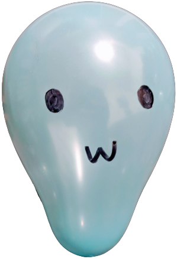

Edgar Pablo Lopez
Hola, soy un chico de 19 años, soy egresado del Centro Bachillerato Tecnológico Industrial y de Servicios No.128, estudie y me gradué como técnico en programación, es una especialidad que me gustó mucho, por lo que he decidido entrar en el mundo de las tecnologias digitales y estudiar Ingeniería en Sistemas Computacionales, pero entre otras de mis pasiones está la filósofia, el atletismo y la música, que aunque no sé cantar o tocar algún intrumento, me encanta escucharla.